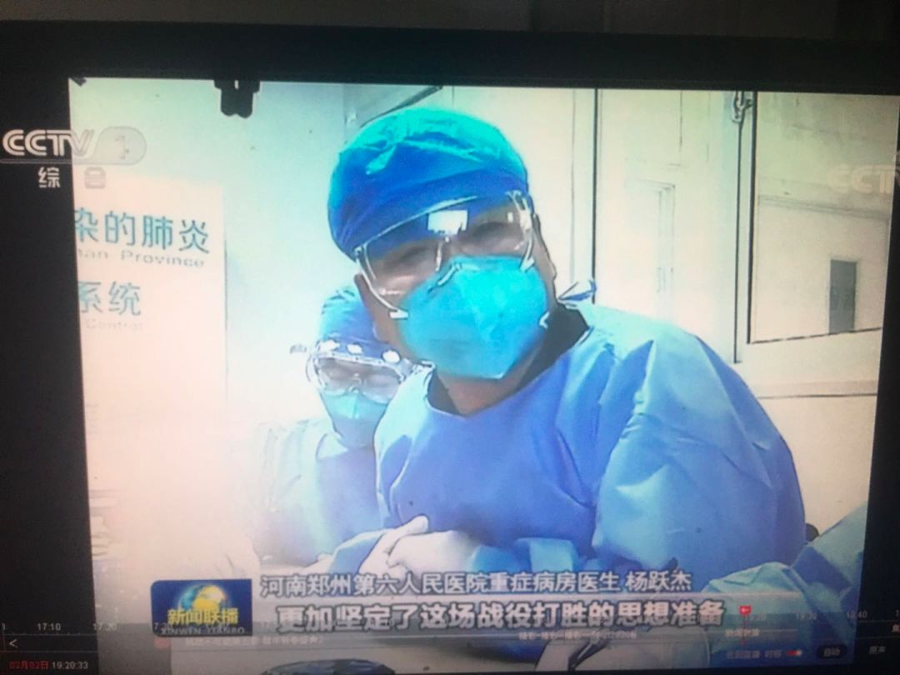
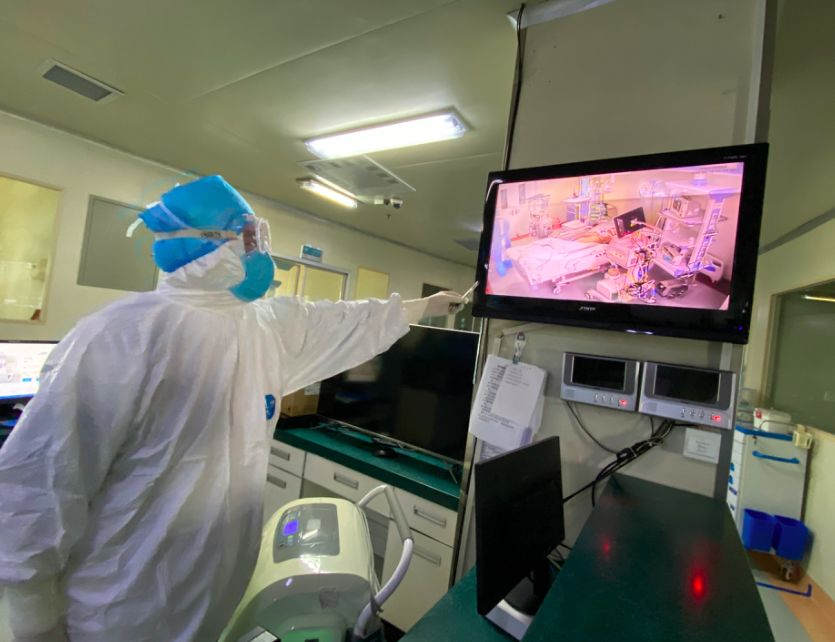
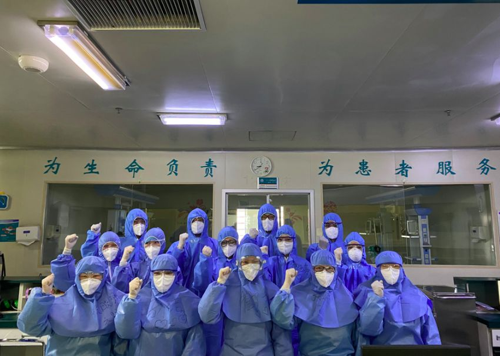

新冠患者潜伏期24天？ 钟南山：单纯根据最小最大值容易误读
原文链接 备份链接 图片来源：图虫创意 记者：陈鑫 “ ‘超长潜伏期’的患者只是个例，本身就没有考虑偏差，不足以成为判定最长潜伏期的依据。” ” 关于“新冠病毒潜伏期最长24天”的话题，钟南山团队在最新公布的论文中指出，单纯根据最小、最大 …
我们医护人员只是整个事件的一个环节，降低死亡率、提升治愈率，靠的是国家总体布局，靠的是全体人民的共同参与。
文 | 杨跃杰（郑州市第六人民医院重症隔离病区主任）
1月25日，我进入“新冠”隔离病区，历时一个多月。其间，我主要从事“新冠肺炎”重症、危重症患者救治，2月25日，我们病区所有的重症患者都脱离了生命危险，我也终于有时间把这个月的经历记录下来。

新冠≠肺炎
“新冠”和“新冠肺炎”应该是两个概念，现在只要一提到“新冠”，人们马上就以为“新冠肺炎”，其实不可以将二者等同起来。
该病毒主要侵犯人体呼吸系统，会不会侵犯人体其他脏器，研究的少，还没有时间去进一步研究对血液系统（免疫系统）、肝脏、肾脏、心脏乃至消化系统、中枢神经系统的损害，因此区分这两个概念有助于科学防治。
“新冠”会不会垂直传播？患新冠肺炎产妇产下的新生儿，需要怎样预防，需要哪些监测指标去观察，还没有标准。“新冠”侵入人体后，人体对它的防御机制怎样，起初的反应怎样，是不是存在首次病毒血症，第二次病毒血症？病理生理怎样，还没提出，相信将来进入教科书会详尽描述。
关于疫情的起因，怎样引起人类发病，目前还不清楚，但相信一定会有结论，而国家现在出台野生动物保护法律，有利于生态平衡、利于人类和谐共生。只有大家都遵守有关法律法规，才可能避免下一个危机。
“新冠”核酸序列与SARS病毒相似度很高，都能引起呼吸系统损害，但在传染性、致死率方面有差别。目前，发病者、隐性感染者是主要传染源，怎样避免隐性感染者献血，通过血液传播应该考虑。
国家号召大家居家的举措，在没有疫苗广泛接种的情况下，是最有效的措施，但我相信，一旦疫苗问世，普遍接种，这个病的发病率在某种程度上就没那么可怕了。

如何预防？
“新冠”传播途径主要是飞沫和接触，在比较密闭环境中，气溶胶可能传播；因此病患集中收治就是把传染源隔离起来，减少空气中病毒存在，加上大家戴口罩、勤洗手，就能减少发病或不发病。
一些人拒绝戴口罩没能充分认识到它的必要性，当然问题也不能一刀切，在没有发病者的偏远乡村、空旷人烟稀少的地方可另当别论。
时常看到一些倔犟之人，就是不戴口罩，危害自己也危害别人。勤洗手是常识，有句话叫做病从口入，新冠尽管呼吸道传播，但不排除粪口传播。
保持乐观心态面对每天生活，也是预防该病的良方，闷闷不乐，郁郁寡欢、心事重重会降低人体免疫力，不利于预防此病及其他疾病发生。充足睡眠，每天6-8个小时，有利于健康。
合理饮食，碳水化合物、蛋白质、维生素每日摄入要合理，有利于人体免疫球蛋白合成，抵抗病毒。至于吸烟、饮酒有利于预防新冠已被证实是没有依据的。
治疗经验
我所在的病区只收治确诊的重症、危重症患者。数量不多，因此有一定的片面性。
氧疗上我们的原则是续惯性应用，鼻导管-面罩-高流量-有创插管-ECMO，免除了无创应用，因为高流量解决不了氧合，无创往往也没效果，所以直接有创。需要说的是，有些患者不配合氧疗。趁医务人员不注意，去掉氧疗，造成治疗被动。
有一例重症患者不配合氧疗。我花费近半个小时时间同其沟通：国家投入那么多人力、物力去救治你，医务人员冒着被感染的风险救治你，要配合，不为自己考虑，也要为大家考虑，为家庭考虑，要有敬畏之心，要有感恩之心；相信国家，相信医务人员，相信科学；氧疗、服药输液一定听从安排，不要任性。
经过交流之后，病人配合治疗，最终从重症转为轻症。

抗病毒药物，从我观察的数例患者，干扰素、洛匹那韦/利托那疗效一般，一例重症患者抗病毒25天鼻咽拭子、血、痰仍核酸阳性，后改为磷酸氯喹，5天后血、咽、鼻拭子、痰全部转阴，不敢说它抗病毒效果最好，但证明有效。
理论上来说，干扰素早期应该有效，随着病毒血症的进一步进展，大部分病毒聚集在肺部，其效果可能变差。相信安全有效药物以后会陆续被发现。患者病毒核酸出院后复阳，说明目前方案不尽完善，需不需要间歇疗法，值得去研究。
抗生素应用，早期应用是预防性细菌感染，可以说不需要“高级别”抗生素，随着住院时间延长或有创侵入操作，感染指标显现，确切了感染部位，就需要精准应用抗生素。我们所管理一位重症患者，肺部感染明确，抗生素应用级别较高，病情稍稳定后降级了，次日，患者出现体温、氧合不好，再次加上，症状好转。因此“降阶梯”节点要把握好；虽然是个案，但也说明一些问题。抗真菌应用只有两三例，一例有确切证据，另两例只是预防性用药。
糖皮质激素应用。大家都认同其双刃剑作用。所管患者在2周左右加重。我们经验，有转向危重症倾向者，早、小、短应用可能收益大，一旦出现“白肺”再应用略显迟了。“白肺”的出现可能与细胞因子风暴有关系，我们开展了细胞因子检测，鉴于数量较少，没有可以总结的，持续观察。体液免疫抗体检测进行了个位数患者检测，由于个体差异，数据偏差大。丙种球蛋白所有患者都应用了，由于没有客观指标，所以没有总结。
呼吸机、ECMO参数的调节，模式的选择非常重要，但体会最大，患者收益最大的，是在此基础上进行的俯卧位，每天大于12小时，确实氧合改善明显。俯卧位需要医生护士多人参与，这时候医护体力消耗最大，被感染风险最高，要严格防护。

中医中药应用。我们患者整个疗程都在应用，由于本人对中医不熟悉，没有总结。
睡眠，睡眠还是睡眠，体会较深。四例重症患者转为轻症，他们的睡眠时间，在整个治疗过程中显得非同小可。在综合治疗的基础上，患者的睡眠时间引起病情波动，多次告诉我们不容忽视。
每天除了病情交班，我都重点问一下患者晚上睡眠几个小时，多次提示，只要患者头天晚上睡眠少于6个小时，患者不同程度出现呼吸次数增加，氧合不好维持，起初并不很在意，往往考虑其他因素，但随着次数的增加，留意观察，患者睡眠大于6-8小时，氧合容易维持，病情相对稳定，反之则差。
可能是巧合，但多次情况这样，不得不提示睡眠时间多少与病情稳定与恢复有关系，例数太少可能没有普遍意义。基于上述情况，我们都想法让患者充足睡眠，有时药物干预帮助其睡眠。我们收治的首例患者，在转为轻症前几天内，白天也睡几个小时，加快了恢复进程。对于轻症、普通型患者，我没有机会接触他们。
总之，患者的康复，需要方方面面，任何细节都很重要，没有哪一个方法是万能的，国家提出，科学救治、精准施策是真理，一个疾病的防治，靠各个部门协同合作。我们医护人员只是整个事件的一个环节，降低死亡率、提升治愈率，靠的是国家总体布局，靠的是全体人民的共同参与。
以上有些观点可能错误，希望指正。

征集令
《新民周刊》现面向全国征集新冠肺炎采访对象和真实故事：
如果你是参与抗击新冠肺炎疫情的医护人员或其家属，我们希望聆听你的“战疫”故事，也希望传达你的诉求。
如果你是确诊、疑似患者本人或家属，我们希望了解你和家人如何“抗疫”的过程，让外界了解你的真实经历。
如果你是疫情严重地区的普通市民，我们希望展现你的乐观，并倾听你所需的帮助。
如果你是公共服务人员或各类捐助者，我们希望看到你的“最美逆行”，记录下你的无私。
……
抗击新冠肺炎疫情，我们诚征对疫情了解的社会各界人士，提供相关线索，说出你的故事，让我们用新闻留存这一切。
《新民周刊》新冠肺炎线索征集值班编辑联系方式（添加时请简要自我介绍）：
周一：应 琛 微信号：paulineying0127
周二：金 姬 微信号：gepetta
周三：黄 祺 微信号：shewen-2020
周四：周 洁 微信号：asyouasyou
周五：孔冰欣 微信号：kbx875055141
周六：吴 雪 微信号：shyshine1105
周日：姜浩峰 微信号：jianggeladandong
✳如你需要捐赠物资，可与以下两位工作人员联系:王勇：WangYong-SH 吴轶君：rommy150708（添加时请注明“捐物资”，方便工作人员快速通过您的申请，谢谢。）
新闻是历史的底稿，你们是历史的见证者。期待你的故事、你的线索！

▼
大家还都在看这些
▼
新民周刊所有平台稿件， 未经正式授权
一律不得转载、出版、改编或进行
与新民周刊版权相关的其他行为，违者必究


原文链接 备份链接 图片来源：图虫创意 记者：陈鑫 “ ‘超长潜伏期’的患者只是个例，本身就没有考虑偏差，不足以成为判定最长潜伏期的依据。” ” 关于“新冠病毒潜伏期最长24天”的话题，钟南山团队在最新公布的论文中指出，单纯根据最小、最大 …
原文链接 备份链接 澎湃新闻记者 贺梨萍 当地时间2月28日，由国家卫健委高级别专家组组长、中国工程院院士钟南山领衔的“中国2019新型冠状病毒疾病的临床特征”研究论文在顶级医学期刊《新英格兰医学杂志》（NEJM）上在线公开发表。该研究纳 …
原文链接 备份链接 新冠肺炎逝者遗体解剖已完成11例，据首份观察报告，肺部深处多粘液的情况，对临床治疗的化痰、排痰方案决策有帮助，对多器官的深入影响仍待进一步检测 2020年2月初，武汉金银潭医院隔离病区内，医护人员正在给新冠肺炎患者做治 …
原文链接 备份链接 很多时候，流调人员不像医生，患者会主动尽可能多地给医生提供有用信息。流调人员说，希望市民在经历过疫情之后，能够了解到流调的重要性，为他们将来的工作提供更多便利。 记者 | 应 琛 当大家对新冠肺炎“零号病人”议论纷纷之 …
原文链接 备份链接 从2月7日到现在，一方面大家的活动越来越丰富，另一方面由于轻症患者比较多，人们病情都慢慢恢复。所以，我看到每个人脸上的笑容都变多了。 口述 | 余 毅 整理 | 王仲昀 这一个月终于要过去了。 2月21日上午，在等待几 …